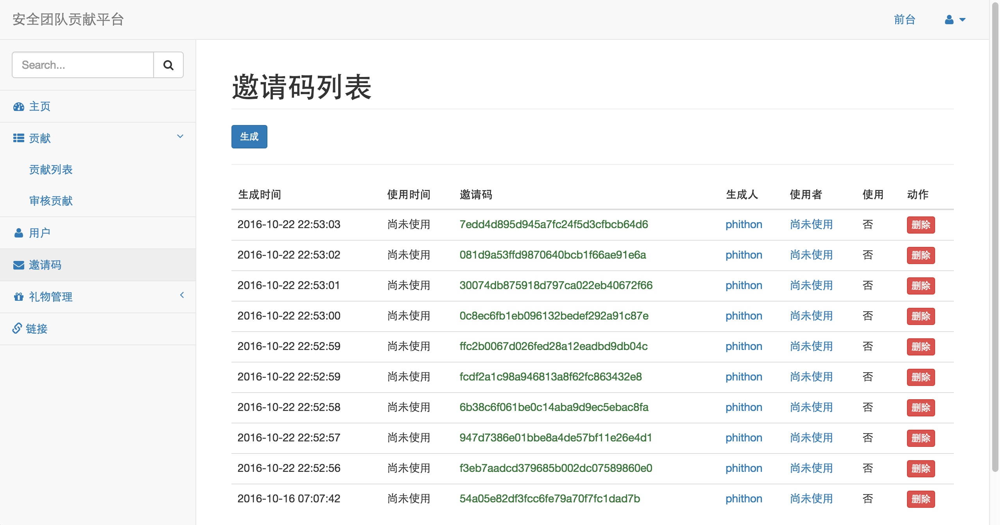
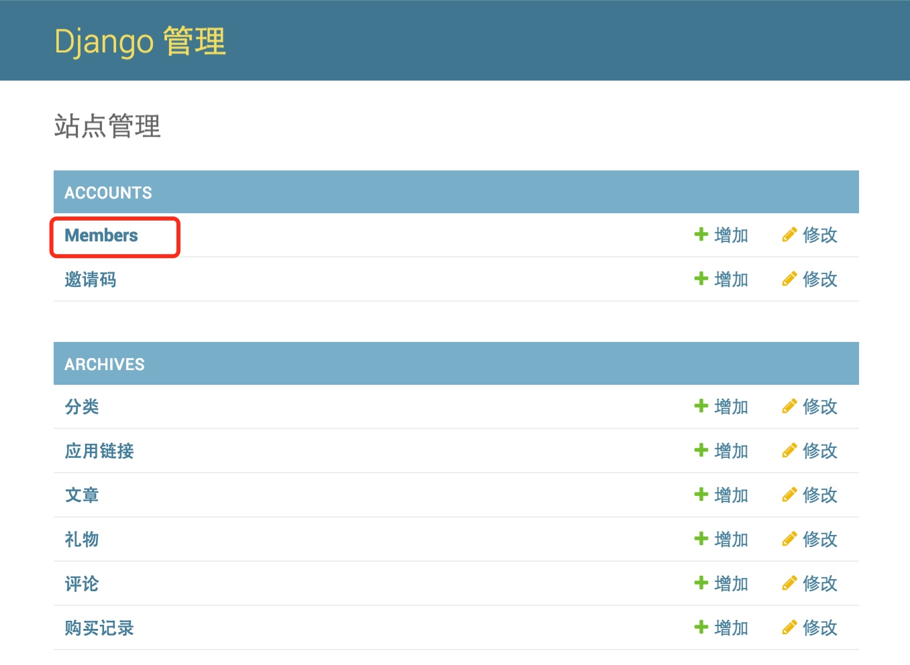
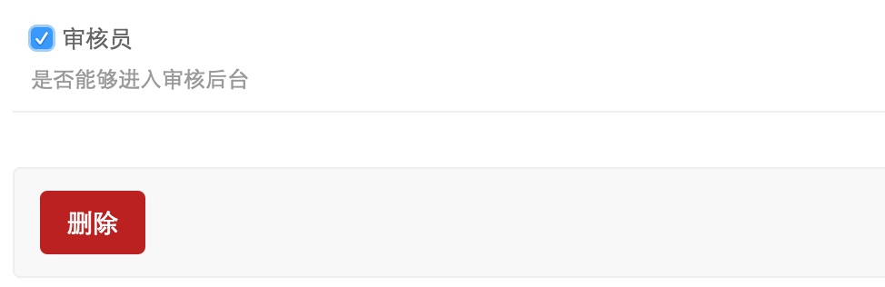
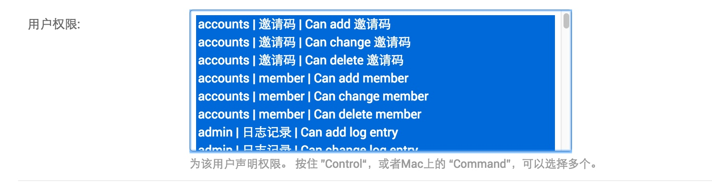

管理员与审核员#
Mooder的身份控制基于Django，并略有不同。
Mooder最高权限用户为“超级管理员”，该用户对所有资源都享有读写权限，并可以修改其他用户的权限。超级管理员可以访问后台 http://yoursite.com/admin/，这个后台是Django自带的后台。
因为Mooder是一个团队贡献系统，团队成员提交贡献需要有人审核，所以Mooder中存在“审核员”这个角色。审核员有一个“专用后台”，即为http://yoursite.com/management/，只有拥有审核员身份的用户才能够访问。
拥有审核员身份的用户可以访问审核员后台，但无法访问Django默认后台，除非其拥有“职员”身份。
审核员后台可以进行文章修改、审核、用户积分变更、邀请码生成、奖品增删改查等等操作。下面说明一下如何增加“审核员”，并使他能够使用“审核员后台”所有功能。
创建超级管理员#
使用docker-compose安装的情况下，会自动生成一个超级管理员，这个管理员的邮箱、昵称和密码在环境变量中定义。
如果是使用源码安装，则需要手动创建超级管理员。执行如下命令即可：
python3 manage.py createsuperuser
依次填写邮箱、昵称、密码即可创建成功。
生成邀请码#
登录Mooder，并点击右上角“用户中心”->“后台管理”，进入审核员后台：

如上图，此为邀请码页面。点击“生成”即可生成一个随机邀请码。
赋予用户审核员身份#
其他用户通过邀请码注册后，默认无身份，只能访问前台。
拥有超级管理员身份的用户，访问http://yoursite.com/admin/，来到后台登录进行登录。点击Members进入用户管理：

选择某个用户，勾选“审核员”选项，即可任命其为“审核员”：

赋予权限#
勾选审核员后，该用户即可登录审核员后台，但还是无法进行任何操作——因为其没有任何资源的权限。
所以，我们再次来到后台选中该用户，在用户权限一项中，选中所有的权限：

点击保存即可。
如果你仅赋予其邀请码的三个权限（add/change/delete），则该用户只能生成、删除邀请码。以此类推。
更多权限体系的说明，请请阅读Django文档。